Manuals should come alive.
Manuscript — for the web.
설명서는 살아 움직여야 하니까,
웹을 위한 매뉴스크립트.
- Web tours
- Web manuals
- Video creation
- 웹 시연
- 웹 매뉴얼
- 동영상 제작
No more clunky screen recordings and stuttering voice-overs. One click and the narration follows the guide text you wrote while the web page comes alive and plays itself, step by step.
Pick just the parts of the site you want to show, click, and a custom demo video comes together. One record button covers the whole arc — author, save, play. Install now and put together the perfect web demo in a minute.
더 이상 번거로운 화면 녹화와 버벅이는 내레이션으로 시간 낭비하지 마세요. 클릭 한 번이면 내가 짠 안내할 내용(텍스트)에 맞춰 음성 안내가 흐르고, 웹 화면이 살아 움직이듯 자동으로 재생됩니다.
내가 원하는 웹사이트 가이드라인 구성만 쏙쏙 골라 클릭해도 맞춤형 시연 영상이 뚝딱 완성! 녹화 버튼 하나로 가이드 영상 제작부터 저장, 재생까지 한 번에 해결하세요. 지금 바로 다운로드하고, 1분 만에 완벽한 웹 소개 영상을 만들어 보세요!
Prefer the dev build? v… .zip with manual install instructions below.
dev 빌드가 필요하신가요? 아래 설치 섹션에 v… .zip 수동 설치 안내가 있습니다.
 Watch the 30-second demo
30초 데모 보기
Watch the 30-second demo
30초 데모 보기
What's inside
핵심 기능
Six little touches that make it nice.
마음에 들 만한 여섯 가지.
Stays put when pages change
페이지가 바뀌어도 그대로
Manuscript remembers the parts of your page in three ways at once, so a small redesign or text tweak won't make your tour go missing.
Manuscript 는 페이지의 위치를 세 가지 방법으로 기억해 둡니다. 약간의 디자인이나 글자 변경에도 시연이 사라지지 않아요.
Works inside embedded frames
임베드된 화면 안도 OK
Pages with embedded mini-pages inside (like documents or maps) work too. Pick whatever you want to highlight, even in there.
문서 미리보기나 지도처럼 페이지 안에 또 다른 화면이 들어 있어도, 그 안의 요소까지 함께 강조할 수 있어요.
Keeps going to the next page
다음 페이지로 자연스럽게
Mark a step as "wait for a click". When someone clicks and the site moves to the next page, your tour picks right back up.
"클릭을 기다리는" 스텝을 만들 수 있어요. 사용자가 버튼을 눌러 다른 페이지로 넘어가도 시연은 새 페이지에서 자연스럽게 이어집니다.
Friendly notes and arrows
친근한 메모와 화살표
Add a short note, a circle, an arrow, or a hand-drawn doodle. They can fade in, slide in, or bounce — your call.
짧은 메모·동그라미·화살표·손그림 낙서까지 더할 수 있어요. 등장 방식도 페이드·슬라이드·통통 튀기 중에서 골라 보세요.
Reads your tour out loud
설명을 소리 내어 읽어줘요
Type a short description for each step and Manuscript will speak it during playback. Arrow keys move between steps, Space pauses, Esc exits.
각 스텝에 짧은 설명을 적어 두면 재생할 때 목소리로 읽어줍니다. 방향키로 이동, Space 로 일시정지, Esc 로 종료.
Speaker notes window
발표자 노트 창
Move the script and controls to a second screen. You read the notes, the audience watches the tour — no need to memorise anything.
대본과 컨트롤을 두 번째 화면으로 옮길 수 있어요. 내가 노트를 보면서 진행하면, 청중에게는 깔끔한 시연만 보입니다.
How it works
이렇게 만듭니다
Five easy steps, start to finish.
다섯 단계면 끝납니다.
Open Manuscript
매뉴스크립트 열기
Click the Manuscript icon in your toolbar and choose New Manuscript. A small panel slides in next to the page, ready to use. It also borrows the page's colors and fonts so your tour fits right in.
브라우저 도구막대의 매뉴스크립트 아이콘을 누르고 새 매뉴스크립트를 선택하세요. 페이지 옆에 작은 작업 패널이 나타나고, 페이지의 색과 글꼴까지 자연스럽게 따라가 한 화면처럼 어울립니다.

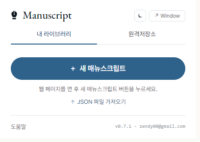
Tap the part you want to show
강조하고 싶은 곳을 클릭
On each step, click the small wand to start picking. Hover over the page and a pink outline follows your mouse — click once to lock in your target. That part shines while everything else softly dims.
각 스텝의 작은 픽커 버튼을 누른 다음 페이지 위로 마우스를 움직이면 분홍색 테두리가 따라옵니다. 원하는 곳을 한 번 클릭하면 그 부분만 또렷이 강조되고 나머지는 살짝 어두워져요.
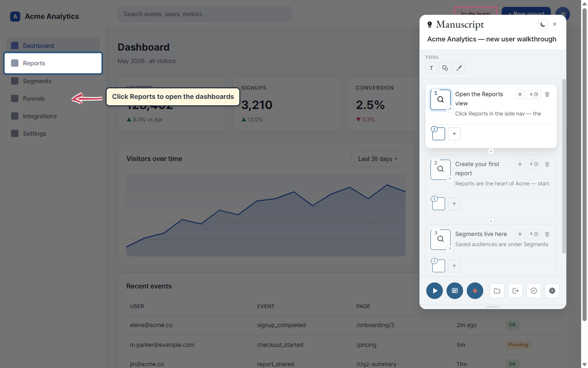
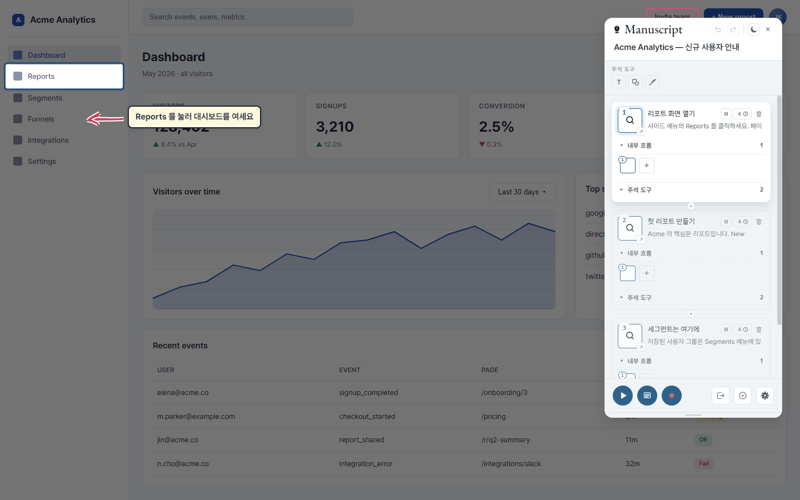
Add a note, shape, or doodle
메모·도형·낙서 더하기
Press for a text box, pick one of eight shapes, or sketch with the freehand tool. Click anything you've added to change its color, font, or how it floats in.
버튼으로 텍스트 상자, 여덟 가지 도형, 손그림까지 자유롭게 더할 수 있어요. 추가한 항목을 클릭하면 색·글꼴·등장 효과를 그 자리에서 바꿀 수 있습니다.
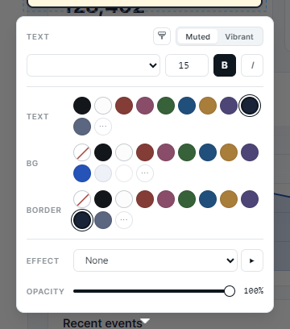
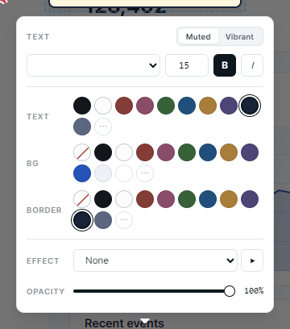
Build out the rest of the tour
나머지 단계 차곡차곡
Use the between cards to insert a step, or the bigger at the end to add one. Drag cards around to reorder. Click any card and the page scrolls to that step with the spotlight on.
카드 사이의 로 중간에 끼워넣고, 맨 아래 큰 로 새 단계를 추가합니다. 카드를 끌어서 순서를 바꿀 수도 있어요. 카드를 누르면 그 단계로 페이지가 자연스럽게 이동하면서 강조 표시가 나타납니다.
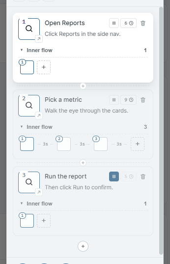
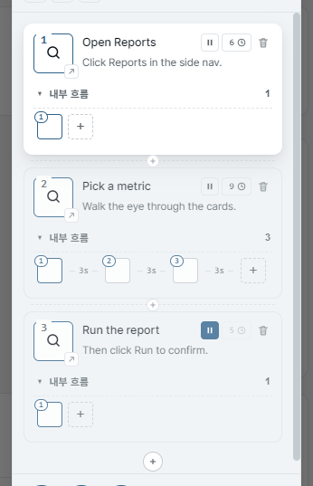
Press play — and you're done
재생만 누르면 완성
Tap at the bottom of the panel to start the tour. A small playback bar appears. Use ← → to move, Space to pause, Esc to exit. Want to read your notes on another screen? Pop out the speaker-notes window.
패널 아래쪽의 를 누르면 시연이 시작됩니다. 작은 재생 바가 나타나요. ← → 로 이동, Space 로 일시정지, Esc 로 종료. 노트를 다른 화면에서 보고 싶다면 발표자 노트 창을 따로 띄울 수 있어요.
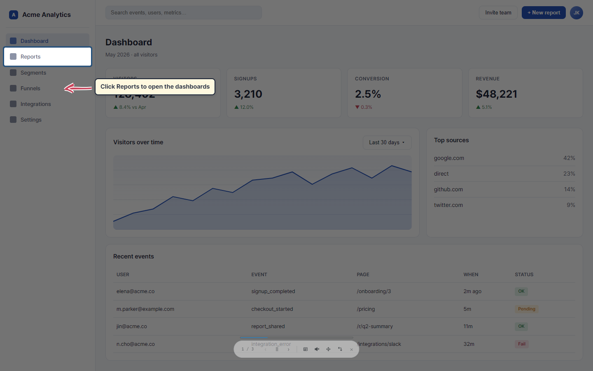
★ Output as video
★ 동영상 출력
Turn your tour into a video.
내가 만든 시연을 동영상으로.
Press one button and your tour plays itself into a video file — just the page, none of the editing tools in the way. Spotlights, notes, the voice narration — everything lands neatly inside. It stops on its own when the tour is finished, then asks you where to save it.
버튼 하나만 누르면 내가 만든 시연이 스스로 재생되어 동영상 파일로 저장됩니다. 편집 도구는 화면에서 사라지고 페이지만 깔끔하게 담깁니다. 강조 표시·메모· 음성 안내까지 영상에 그대로 들어갑니다. 시연이 끝나면 자동으로 멈추고 저장할 위치를 물어봐요.
Want to chip in with your own voice along the way? Tap Space while you're recording and the tour pauses — the video keeps rolling, so you can speak up, click around, or just catch your breath. Tap Space again to pick the tour back up. Turn on Also record my microphone on the guide screen first if you want your voice baked right into the video alongside the read-aloud narration.
녹화 도중에 내 목소리로 한마디 보태고 싶으면? 녹화 중에 Space 키를 누르면 시연이 잠깐 멈춰요. 그동안에도 녹화는 계속되니까, 직접 설명을 보태거나, 페이지를 클릭해서 뭔가 보여주거나, 잠깐 숨을 고르세요. Space를 다시 누르면 시연이 이어집니다. 안내 창에서 내 목소리도 함께 녹음을 켜 두면 내가 말한 내용이 읽어주는 안내와 함께 영상에 자연스럽게 담겨요.
- Just the page — the editor panel and controls slide out of view while you record.
- 3-second countdown so you can get ready, with a Cancel button or Space / Esc to back out.
- Voice narration included — the spoken descriptions are captured along with the video.
- Pause anytime to chip in — tap Space while recording and the tour holds still. The video keeps rolling, so you can speak up, click around, or just collect your thoughts. Space again picks it back up.
- Bring your own voice (optional) — turn on "Also record my microphone" on the guide screen and your voice lands in the video alongside the read-aloud narration.
- Stops by itself when the tour reaches the end. Want to stop sooner? Just press Esc anywhere on the page.
- You pick where it saves — the browser's Save dialog opens when the tour ends. Nothing is uploaded; everything stays on your computer.
- 페이지만 담깁니다 — 녹화 중에는 편집 패널과 컨트롤이 화면에서 사라져요.
- 3 초 카운트다운으로 마음의 준비를 할 시간이 있고, 취소 버튼이나 Space / Esc 로 언제든 멈출 수 있어요.
- 음성 안내까지 함께 — 읽어주는 설명도 영상에 그대로 담깁니다.
- 언제든 잠깐 멈추고 거들 수 있어요 — 녹화 중에 Space 키를 누르면 시연이 멈춥니다. 녹화는 그대로 계속되니까 한마디 보태거나, 페이지를 클릭해서 뭔가 보여주거나, 잠깐 생각을 정리할 수 있어요. Space를 다시 누르면 시연이 이어집니다.
- 내 목소리도 함께 (선택) — 안내 창에서 "내 목소리도 함께 녹음"을 체크하면 내가 말한 내용이 읽어주는 안내와 함께 영상에 담깁니다.
- 알아서 멈춥니다 — 시연 마지막에 자동으로 종료. 더 일찍 끝내고 싶으면 페이지 아무 곳에서 Esc 키만 누르세요.
- 저장 위치는 직접 선택 — 시연이 끝나면 브라우저의 "다른 이름으로 저장" 다이얼로그가 뜹니다. 어디로도 업로드되지 않고 컴퓨터 안에만 남습니다.
For AI agents
AI 에이전트용
Author with an AI agent.
AI 에이전트로 작성하세요.
Hand SKILL.md to an AI agent along with the URL
you want to tour. The agent emits a Manuscript scenario
JSON — ready to load and play.
SKILL.md 와 시연할 페이지 주소를 AI 에이전트에게
전달하면, Manuscript 시나리오 JSON 을 만들어 줍니다. 그대로
불러와 재생만 누르면 됩니다.
Pick a URL
URL 준비
The page you want a tour of.
시연하고 싶은 페이지 주소를 정합니다.
Hand SKILL.md + URL to your agent
SKILL.md 와 URL 을 에이전트에 전달
Claude, Cursor, Windsurf, Cline, ChatGPT — anywhere you talk to an AI works.
Claude, Cursor, Windsurf, Cline, ChatGPT 등 AI 에이전트라면 어디서나 동작합니다.
Load the JSON in Manuscript
받은 JSON 을 Manuscript 로 불러오기
Import the file, press play. Manuscript finds each spot on the page for you.
파일을 불러오고 재생만 누르면, Manuscript가 각 요소의 위치를 알아서 찾아갑니다.
Example prompt
예시 프롬프트
Use SKILL.md. Generate a Manuscript tour for
https://example.com/dashboard. English, 6 steps.AI authoring is a head start, not a finishing line. Open the JSON in Manuscript and review the steps before you share — Manuscript remembers each spot three different ways, so the tour keeps playing even when the AI's first guess isn't quite right.
AI 작성은 출발점일 뿐이니, JSON 을 Manuscript 로 불러와 한 번 확인한 다음 공유하세요. Manuscript 는 각 자리를 세 가지 방법으로 기억하기 때문에, AI 의 첫 시도가 완벽하지 않아도 시연이 끊기지 않습니다.
Install
설치
Two ways in — pick the one that fits.
두 가지 설치 방법 — 본인에게 맞는 쪽으로.
Most people want the Web Store path — one click and the browser handles updates. If you'd rather test the latest dev build before it clears Web Store review, the manual .zip path below has you covered.
대부분은 웹 스토어 경로가 편합니다 — 한 번 클릭하면 브라우저가 업데이트까지 알아서 챙겨요. 웹 스토어 검수 전의 dev 빌드를 먼저 써보고 싶다면 아래 수동 .zip 경로를 골라주세요.
Manuscript is live on the extension store. Hit the button below, confirm Install Manuscript, and you're ready to go in seconds — the browser keeps it updated on its own.
Manuscript 는 확장 스토어에서 바로 받을 수 있습니다. 아래 버튼을 누르고 설치만 확인하면 몇 초 만에 준비 완료 — 업데이트는 브라우저가 알아서 챙겨줍니다.
→ Install Manuscript (Web Store)
- Click the button above — it opens Manuscript's page on the extension store.
- Hit Install, then Add extension when the browser asks to confirm.
- Click the puzzle-piece icon in the browser toolbar and pin Manuscript so it's always one click away.
-
Open any regular web page (
github.com, a help page, your own product) and click the Manuscript icon. The first time, the browser will ask for page access — say yes and you're ready to go.
- 위 버튼을 누르면 확장 스토어의 Manuscript 페이지가 열립니다.
- 설치 → 확인 창에서 확장 프로그램 추가 를 누릅니다.
- 브라우저 도구막대의 퍼즐 아이콘에서 Manuscript 를 고정해 두면 언제든 한 번 클릭으로 열 수 있어요.
-
아무 웹 페이지(
github.com, 도움말 페이지, 본인의 사이트 등)를 열고 Manuscript 아이콘을 누르세요. 처음 한 번은 페이지 접근 권한을 묻는데, 허용하시면 바로 시연을 만들 준비가 끝납니다.
The latest dev build straight from main — typically a
release or two ahead of the Web Store, since store review takes
a few days. You'll handle updates yourself by re-downloading this
file when a new version lands. Good fit for: testing pre-release
features, internal tools that can't reach the Web Store, or
"I want it now".
main 브랜치의 최신 dev 빌드 — 스토어 검수가 며칠 걸리므로
보통 웹 스토어 버전보다 한두 단계 앞서 있습니다. 새 버전이 나오면 이
파일을 다시 받아 직접 갱신해 주셔야 합니다. 추천 대상: 출시 전 기능을
먼저 써보고 싶은 분, 웹 스토어 접근이 어려운 사내 환경, 또는
"지금 당장 써보고 싶다"는 분.
SHA-256
checking…
· .sha256
·
SHA-256
확인 중…
· .sha256
·
-
Grab the file above and unzip it somewhere you'll keep it
(for example
C:\Users\<you>\Documents\manuscript). Leave the folder where it is — the browser reads from there every time it starts. -
Open a new tab and type
chrome://extensions/(oredge://extensions/) in the address bar. - Flip the Developer mode switch on (top-right corner).
- Click Load unpacked (top-left).
-
Choose the unzipped
manuscript-x.y.zfolder. Manuscript pops into the list. - Click the puzzle-piece icon in the browser toolbar and pin Manuscript so it's always one click away.
-
Open any regular web page (
github.com, a help page, your own product) and click the Manuscript icon. The browser asks for page access on first run — say yes and you're done.
-
위의 다운로드 버튼으로 파일을 받고, 잘 두실 폴더(예:
C:\Users\<본인>\Documents\manuscript)에 압축을 풀어 주세요. 그 폴더는 그대로 두시면 됩니다 — 브라우저가 켜질 때마다 그곳에서 읽어옵니다. -
새 탭을 열고 주소창에
chrome://extensions/(또는edge://extensions/) 를 입력하세요. - 오른쪽 위의 개발자 모드 스위치를 켭니다.
- 왼쪽 위의 압축해제된 확장 프로그램 로드 버튼을 누릅니다.
-
압축을 푼
manuscript-x.y.z폴더를 선택하면 Manuscript 가 목록에 나타납니다. - 브라우저 도구막대의 퍼즐 아이콘에서 Manuscript 를 고정해 두면 언제든 한 번 클릭으로 열 수 있어요.
-
일반 웹 페이지(
github.com, 도움말 페이지, 본인의 사이트 등)에서 Manuscript 아이콘을 누르세요. 처음 한 번은 페이지 접근 권한 — 허용하시면 끝.
chrome://, edge://) or the new-tab page — the browser
doesn't allow extensions there. If a tab was already open before you installed,
just refresh it once.
chrome://,
edge://) 와 새 탭에서는 동작하지 않아요 — 브라우저 정책으로 막혀
있습니다. 설치 전에 열려 있던 탭은 한 번만 새로고침해 주시면 됩니다.
Wondering what changed between versions? → See the changelog
버전별로 무엇이 바뀌었는지 궁금하다면? → 변경사항 보기
How to use it
사용 설명서
A friendly handbook to walk you through.
처음부터 끝까지, 친절한 안내서.
1. Quick start
1. 퀵 스타트
- Open any regular web page (not
chrome://, not the new-tab page). - Click the Manuscript icon and hit New Manuscript.
- A floating panel appears top-right of the page. The page's theme color and fonts auto-populate the palette.
- Click the panel title to rename your manuscript (e.g. "Checkout walkthrough").
- Click the picker on a step card → hover the page → click the target element.
- Use the toolbar buttons (, shapes, freedraw) to layer annotations.
- Hit to replay. Use ← → Space Esc.
- 일반 웹 페이지를 엽니다 (
chrome://·새 탭 불가). - Manuscript 아이콘 클릭 → 새 매뉴스크립트 클릭.
- 페이지 우상단에 floating panel이 등장. 페이지의 테마 색·폰트가 팔레트에 자동 추가됩니다.
- 패널 타이틀을 클릭해 이름 변경 (예: "결제 페이지 가이드").
- 스텝 카드의 picker → 페이지 hover → 대상 요소 클릭.
- 툴바 버튼(, 도형, freedraw)으로 annotation 추가.
- 로 재생. ← → Space Esc 사용.
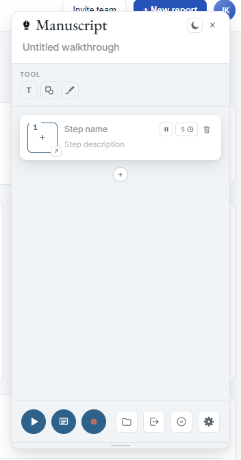
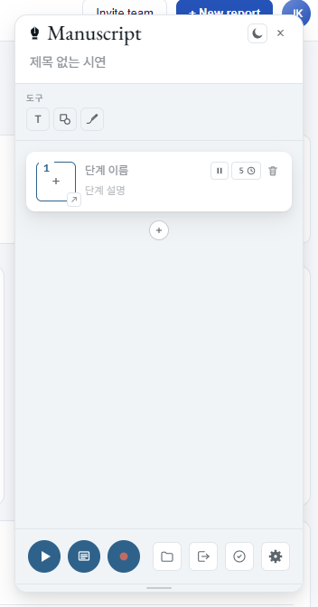
2. Picking elements
2. 요소 선택
When you pick an element, Manuscript writes down three different ways to find that same spot later. First, any internal name tag the page already attaches to it. Second, the words visible on the element together with where it sits on the page. Third, the location on the screen and the text right around it. If the page changes later, Manuscript tries each clue in turn until one of them lands on the right spot.
요소를 한 번 픽하면 Manuscript는 그 자리를 다시 찾기 위한 단서 세 가지를 적어둡니다. 첫째 — 페이지가 그 요소에 붙여둔 내부 이름표. 둘째 — 화면에 보이는 글자와 그 주변 위치. 셋째 — 화면 안에서의 위치와 근처에 있는 글자들. 나중에 페이지가 바뀌어도 Manuscript는 이 세 단서를 차례로 시도해 같은 자리를 다시 찾아냅니다.
Pages inside pages (iframe, one level deep): If the inner page comes from the same website, picking and playback both work. If it comes from a different website, the first click still registers, but the browser locks Manuscript out at playback time so that step shows a "couldn't find it" message. Pages nested two or more levels deep aren't supported yet.
페이지 안에 들어 있는 또 다른 페이지(iframe, 1단 깊이): 안쪽이 같은 사이트면 픽·재생 모두 정상 동작합니다. 안쪽이 다른 사이트면 클릭은 잡히지만, 재생 시점에는 브라우저가 접근을 막아 "요소를 찾지 못함" 안내가 뜹니다. 두 단계 이상 중첩된 페이지는 아직 지원하지 않습니다.
Edit the ring & the dim background
Spotlight ring·dim 편집
Once a step has a picked element, the spotlight draws a colored ring around the target and dims everything else. Both are per-step. Click the ring (the colored outline, not the inside) and a Spotlight popup opens — same swatch + slider model as the annotation property popup.
스텝에 요소가 잡혀 있으면 spotlight가 그 요소 주위에 색 ring을 그리고 나머지 페이지는 dim 처리합니다. 둘 다 스텝 단위로 설정. ring(테두리) 부분을 클릭하면 Spotlight popup이 열립니다 — annotation 속성 popup과 동일한 swatch + 슬라이더 구조입니다.
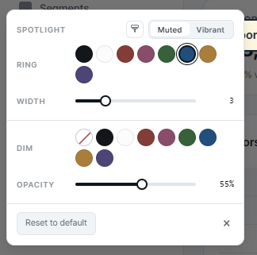

- Muted / Vibrant toggle — same swatch set as the annotation editor, so the ring color stays in tone with annotations on the same step.
- Ring color — 8 swatches in the current swatch mode. Default is the theme's primary blue (
oklch(0.42 0.09 250)). - Width slider — 0 to 12 px. Default 3 px. Set to 0 to hide the ring while keeping the dim.
- Dim color — same 8 swatches. Default black (
#000000). The page outside the spotlight rect tints with this color. - Opacity slider — 0 to 100 %. Default 55 %.
- Reset to default — clears the step's
spotlightfield. The spotlight falls back to the extension's hardcoded defaults. - × or click outside — closes the popup. Changes save as you edit; no separate apply step.
- Muted / Vibrant 토글 — annotation 편집기와 같은 swatch 세트. ring 색이 같은 스텝의 annotation과 톤이 맞습니다.
- Ring 색 — 현재 swatch 모드의 8 swatch. 기본값은 테마 primary 블루(
oklch(0.42 0.09 250)). - Width 슬라이더 — 0 ~ 12 px. 기본 3 px. 0으로 두면 ring만 사라지고 dim은 유지됩니다.
- Dim 색 — 같은 8 swatch. 기본 검정(
#000000). spotlight rect 바깥 영역이 이 색으로 덮입니다. - Opacity 슬라이더 — 0 ~ 100 %. 기본 55 %.
- Reset to default — 그 스텝의
spotlight필드를 비웁니다. 비어 있으면 확장이 hardcoded default로 그립니다. - × 또는 popup 바깥 클릭 — 닫기. 변경은 즉시 저장되며 별도 적용 버튼은 없습니다.
Per-step, not global. Spotlight style is stored
on each Step (Step.spotlight). To keep
one tone across the whole manuscript, set the first step's
spotlight and copy the values into the others — there's no
global "apply to all" yet.
스텝 단위, 전역 아님. spotlight 스타일은 각
Step에 저장됩니다(Step.spotlight).
매뉴스크립트 전체에 같은 톤을 적용하려면 첫 스텝의 값을 다른
스텝에 직접 복사해야 합니다 — 아직 "전체 스텝에 적용" 옵션은
없습니다.
Authoring-only. The popup opens during authoring. During replay the ring click passes through so it doesn't interfere with action steps or page interactions.
편집 모드 전용. popup은 편집(authoring) 중에만 열립니다. 재생 중에는 ring 클릭이 통과되어 action 스텝과 페이지 상호작용을 방해하지 않습니다.
3. Annotations
3. annotation 편집
Three kinds — text, shape (8 sub-kinds: rectangle, ellipse, triangle, diamond, star, callout, line, block arrow), and freedraw (hand-drawn via rough.js). Click any annotation to open the property popup.
3종 — text, shape(8가지: 사각형/타원/삼각형/마름모/별/콜아웃/선/블록 화살표), freedraw(rough.js 손그림). annotation을 클릭하면 속성 popup이 열립니다.
Property popup
속성 popup
- Color — 8 swatches + site-extracted colors + custom picker.
- Muted / Vibrant toggle — swaps the 8-swatch palette without changing the UI palette.
- Font — site fonts first, then base fonts. With Asta Sans as a fallback so the font survives a page-context move.
- Effect — Fade / Slide / Bounce / Zoom / Rotate 2× as an entry animation.
- Opacity slider — separate for stroke, fill, text background.
- 색상 — 8 swatch + 사이트에서 추출한 색 + custom picker.
- Muted / Vibrant 토글 — UI 팔레트 변경 없이 8 swatch만 교체.
- 글꼴 — 사이트 글꼴 먼저, 그다음 base 글꼴. Asta Sans fallback 포함으로 페이지 컨텍스트가 바뀌어도 글꼴 유지.
- 효과 — Fade / Slide / Bounce / Zoom / Rotate 2× 등장 애니메이션.
- 투명도 슬라이더 — stroke / fill / text 배경 각각.
Resize, rotate, animate
크기 조절·회전·애니메이션
Click an annotation to reveal handles. Corner drag = resize, top = rotate, bottom-left = delete. Rotation + animation combine, the annotation lands at the chosen angle.
annotation을 클릭하면 핸들이 표시됩니다. 코너 드래그로 크기 조절, 상단 로 회전, 좌하단 로 삭제. 회전과 애니메이션이 결합되어 최종 각도로 안착합니다.
4. Steps & reorder
4. 스텝과 재배치
- Insert between — small between cards.
- Append — large at the bottom.
- Reorder — drag a step card to move it.
- Spotlight a step — click the card. The page auto-scrolls to the picked element and shows the spotlight.
- Description — contenteditable text on the card. Used as the presenter note and read aloud during replay.
- Timer chip — click the seconds value on the top-right of a card to set auto-advance.
- Action toggle — pause icon on the top-right toggles "wait for user click".
- 스텝 사이 삽입 — 카드 사이 작은 .
- 끝에 추가 — 하단 큰 .
- 순서 변경 — 스텝카드를 드래그.
- 스텝 spotlight — 카드 클릭. 페이지가 해당 요소로 자동 스크롤되고 spotlight 표시.
- 설명 — 카드의 contenteditable 텍스트. 발표자 노트로 사용되며 재생 중 음성으로 읽힙니다.
- 타이머 chip — 카드 우상단의 초 단위 값 클릭으로 자동 진행 시간 설정.
- action 토글 — 우상단 일시정지 아이콘으로 "사용자 클릭 대기" 토글.
5. Sub-elements NEW v0.4.0
5. 서브 요소 NEW v0.4.0
A single step can spotlight a row of related items in sequence while the same description plays — toolbar buttons, feature cards, form fields. The primary element is what you pick first; sub-elements are added below the step card and visited one by one during replay with smooth transitions.
하나의 스텝이 여러 요소를 순서대로 비춥니다 — 툴바 버튼, 카드 묶음, 폼 필드 같은 묶음. 처음 picker 로 잡은 게 primary, 스텝 카드 아래에 sub-element 가 줄지어 추가되고 재생 시 부드러운 전환으로 하나씩 강조됩니다. 스텝카드에 작성하신 설명이 읽히는 동안 움직여요.
Adding sub-elements
서브 요소 추가
- Below the step card, click the dashed + at the right end of the sub track. The picker turns on — click an element on the page to add it as a sub.
- Subs have to live on the same page as the primary. If you've navigated to a different page, the picker refuses. Either go back to the original page, or rebuild the step from the right page.
- When you add a new sub, the step's remaining time is split evenly across the primary and every sub.
- 스텝 카드 아래 서브 트랙 오른쪽 끝의 점선 + 를 누르면 picker 가 켜집니다 — 페이지에서 원하는 요소를 클릭하면 sub 로 추가됩니다.
- 서브 요소는 primary 와 같은 페이지에서만 잡을 수 있습니다. 다른 페이지로 이동한 상태면 picker 가 거부합니다. 원래 페이지로 돌아가거나, 맞는 페이지에서 스텝을 다시 만드세요.
- 새 sub 를 추가하면 스텝의 남은 시간이 primary 와 모든 sub 에 균등하게 나눠집니다.
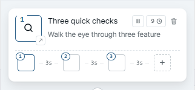
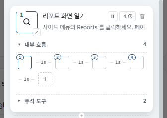
Numbered badges & replay order
번호 뱃지와 재생 순서
Each node in the sequence wears a circle badge: primary = 1, first sub = 2, second sub = 3, … The badge is the order the spotlight visits during replay. Smooth interpolated transitions (350 ms, ease-in-out-cubic) carry the spotlight from one node to the next.
각 노드에 동그라미 번호 뱃지가 붙습니다 — primary = 1, 첫 sub = 2, 두 번째 sub = 3, … 재생 시 spotlight 가 이 번호 순서로 방문합니다. 노드 사이 전환은 350 ms ease-in-out-cubic 으로 부드럽게 이어집니다.
Timing model
시간 모델
- The step's total time stays the same. The time spent on each node (primary + every sub) adds up to the step's auto-advance seconds. The auto-advance value is the reference; everything else fits inside it.
- Drag a gap label (the marker between two nodes) to change how the time is split. The label slows down a touch so you can land it precisely; the other gaps stretch or shrink in proportion so the total doesn't change.
- No node goes under 100 ms. Even the shortest step stays on each element for at least that long.
- Voice narration runs separately. The step's description is read aloud once over the whole sub sequence, and the step waits for whichever finishes last — narration or the last sub.
- 스텝 전체 시간은 그대로 유지됩니다. 각 노드(primary + 모든 sub)에 머무는 시간의 합이 스텝의 자동 진행 초와 같아요. 자동 진행 값이 기준이고, 나머지는 그 안에서 나뉩니다.
- 노드 사이의 간격 라벨을 드래그하면 시간 분배가 바뀝니다. 라벨이 너무 빨리 따라오지 않도록 살짝 제한이 걸려 있어 원하는 값에 정확히 멈출 수 있고, 다른 간격은 비례적으로 늘거나 줄어 전체 시간이 그대로 유지됩니다.
- 한 노드의 최소 시간은 100 ms. 가장 짧게 잡아도 각 요소에서 그 시간만큼은 머무릅니다.
- 음성 안내는 별도로 흐릅니다. 스텝 설명은 sub 시퀀스 전체에 걸쳐 한 번 읽히고, 음성과 마지막 sub 중 늦게 끝나는 쪽까지 기다린 다음 다음 스텝으로 넘어갑니다.
Time-shift — pull a sub earlier / push later
시간 이동 — sub 를 앞당기거나 늦추기
When a sub is selected, two small chevron buttons appear at its bottom corners — ‹ pulls it 0.1 s earlier, › pushes it 0.1 s later. Keyboard equivalents: ← / →. The buttons appear on hover (and while a sub is selected), so they don't clutter the track when you're not adjusting timing.
sub 를 선택하면 그 아래 양 모서리에 작은 갈매기 버튼이 나타납니다 — ‹ 누르면 0.1 s 앞당기기, › 누르면 0.1 s 늦추기. 키보드는 ← / →. 버튼은 hover 시 + 선택 상태에서만 보여 평소에 트랙이 어수선하지 않습니다.
- One sub selected — only the gap just before it shrinks or grows. The sub plays for the same length of time, just earlier or later in the sequence.
- A connected run selected — the whole run moves together. Gaps inside the run don't change.
- The whole track selected — the same rule applies to the time at the start (primary) and the time at the end (last sub).
- Nothing happens if a 0.1 s shift would squeeze any gap below 100 ms. Either select fewer items, or stretch the step's overall time.
- sub 하나 선택 — 그 sub 바로 앞의 간격만 줄거나 늘어납니다. sub 자체의 재생 시간은 그대로이고, 시퀀스 안에서 시작 시각만 앞으로 / 뒤로 이동합니다.
- 연속해서 붙어 있는 묶음 선택 — 묶음 전체가 함께 이동합니다. 묶음 내부의 간격은 변하지 않아요.
- 트랙 전체 선택 — 시작 (primary 머무는 시간) 과 끝 (마지막 sub 머무는 시간) 양쪽에 같은 규칙이 적용됩니다.
- 0.1 s 이동했을 때 어느 간격이라도 100 ms 아래로 떨어지면 아무 일도 일어나지 않습니다. 선택을 줄이거나 스텝 전체 시간을 늘려주세요.
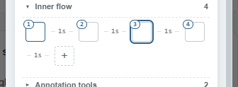
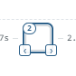
Multi-select & deletion
다중 선택과 삭제
- Click a sub — select just that one and move the spotlight to that element.
- Ctrl / Cmd + click — add or remove this sub from the current selection.
- Shift + click — select the range from the last clicked sub to this one.
- Esc or click outside the sub track — clear the selection.
- Click the primary thumbnail (badge 1) — selects the primary instead of a sub and moves the spotlight back to it.
- Delete / Backspace while subs are selected — removes them all. The remaining gaps share out the freed time so the step's total stays the same. If you're typing into a step name, description, or the panel title, the key is left alone so your typing isn't interrupted.
- 클릭 — sub 하나만 선택하고 그 요소로 spotlight 가 이동합니다.
- Ctrl / Cmd + 클릭 — 이 sub 를 현재 선택에 더하거나 빼기.
- Shift + 클릭 — 마지막으로 클릭한 sub 부터 이번 sub 까지 범위 선택.
- Esc 또는 트랙 바깥 클릭 — 선택 해제.
- primary 썸네일 클릭 (1번 뱃지) — sub 가 아닌 primary 가 선택되고 spotlight 가 그쪽으로 돌아갑니다.
- Delete / Backspace — 선택된 sub 가 전부 삭제됩니다. 남은 간격이 비워진 시간을 나눠 가져, 스텝 전체 시간은 그대로 유지됩니다. 스텝 이름·설명·패널 타이틀에 글을 입력 중일 때는 이 키가 그대로 입력에 쓰여, 작성에 방해되지 않습니다.
Reorder
재배치
Drag and drop with insert-between behavior. Drop on the left half of a sub to slip in before it, on the right half to slip in after. The gap labels between subs work as drop spots too, and a thin vertical bar shows you exactly where the sub will land while you're dragging. If you drag a sub that's part of the current selection, the whole selected group moves together and keeps its order; dragging a sub that's not selected moves just that one.
드래그 & 드롭 — 사이에 끼워 넣기 방식으로 동작합니다. sub 의 왼쪽 절반에 떨구면 그 앞에, 오른쪽 절반에 떨구면 그 뒤에 끼워집니다. sub 사이의 간격 라벨도 떨굴 수 있는 자리이며, 드래그하는 동안 얇은 세로 막대가 sub 가 정확히 어디에 들어갈지 미리 보여줍니다. 현재 선택에 포함된 sub 를 드래그하면 선택 묶음 전체가 순서를 유지한 채 함께 이동하고, 선택되지 않은 sub 를 드래그하면 그 sub 하나만 이동합니다.
Action steps + subs
Action 스텝과 sub 의 조합
When a step is an action step (wait for click) and also has sub-elements, the sub sequence plays through to the end first. After the last sub finishes its time on screen, the click-wait kicks in on the last sub's element — that's where the user clicks to advance to the next step.
스텝이 action 스텝 (클릭 대기) 이면서 sub 도 가지고 있으면, sub 시퀀스가 끝까지 재생된 다음 마지막 sub 요소에서 action 대기가 시작됩니다. 사용자는 마지막 sub 요소 를 클릭해서 다음 스텝으로 넘어갑니다.
Replay notes
재생 시 참고
- Page scroll during transition is fine — the end rect is recomputed each frame so the spotlight tracks the real DOM position.
- A sub that fails to resolve on the page is skipped with a warn — only the primary failing triggers the not-found recovery modal.
- 전환 중 페이지 스크롤은 OK — 종료 rect 를 매 프레임 다시 계산해서 실제 DOM 위치를 따라갑니다.
- sub 가 페이지에서 못 찾아지면 그 sub 만 건너뜁니다 (경고 표시) — primary 가 실패할 때만 not-found 복구 모달이 뜹니다.
6. Action steps
6. action 스텝
Turn a step into an action by clicking the pause icon on the card. During replay, an "Click or type in this area" bubble appears on the target element and auto-advance pauses until the user interacts. If the click navigates to a new URL, Manuscript resumes the manuscript on the new page automatically.
카드의 일시정지 아이콘을 클릭하면 그 스텝이 action 스텝으로 바뀝니다. 재생 중 대상 요소에 "이 영역을 클릭하거나 입력하세요" 버블이 뜨고 자동 진행이 멈춥니다. 사용자가 클릭해서 다른 URL로 이동해도 새 페이지에서 시연이 자동 재개됩니다.
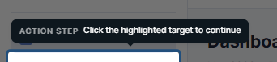
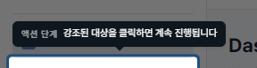
7. Replay & prompter
7. 재생과 프롬프터
Hit in the panel footer. A translucent control bar appears at the bottom — it gets a touch darker when you hover over it, and it remembers where you dragged it, even after the page navigates. The progress strip floats just above the control bar.
패널 하단의 로 재생을 시작합니다. 반투명 컨트롤 바가 하단에 나타나고, 마우스를 올리면 살짝 진해집니다. 드래그로 위치를 옮기면 페이지가 이동해도 그 위치 그대로 유지돼요. 진행 표시줄은 컨트롤 바 바로 위에 떠 있습니다.
Keyboard
키보드
- ← / → — previous / next step
- Space — pause / resume
- Esc — exit replay
- ← / → — 이전 / 다음 스텝
- Space — 일시정지 / 재개
- Esc — 재생 종료
Detached prompter
발표자 노트 분리
The prompter button in the panel's footer opens a separate browser window with a 3-column layout — step list on the left, the current step in the middle, the next one on the right. Same keyboard shortcuts as the panel, so you can drive the tour from a second screen.
패널 하단의 프롬프터 버튼을 누르면 별도 브라우저 창이 열립니다. 왼쪽에는 스텝 목록, 가운데에는 현재 스텝, 오른쪽에는 다음 스텝이 보이는 3 열 구조예요. 패널과 같은 단축키를 쓰니 두 번째 모니터에서 편하게 진행할 수 있습니다.
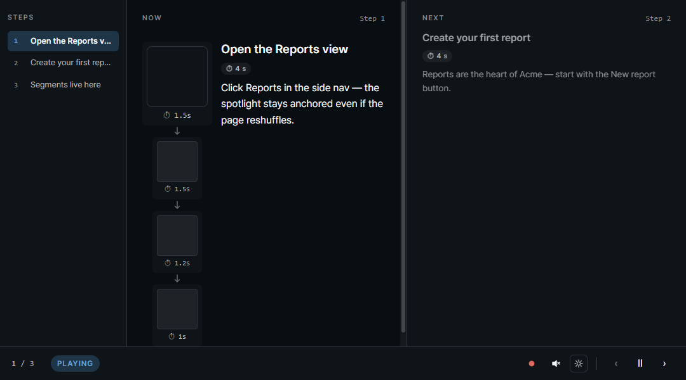
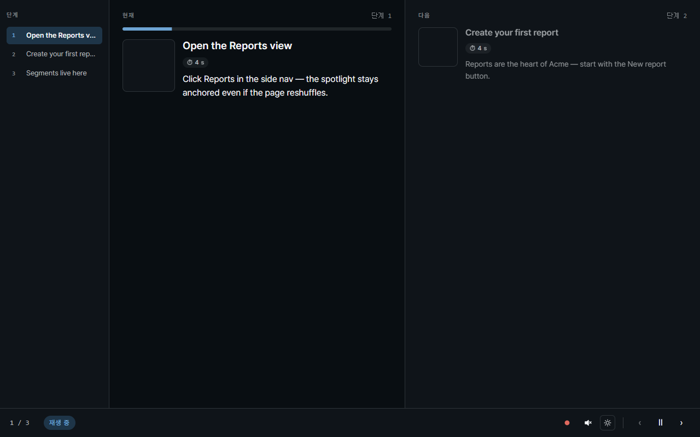
Voice narration
음성 안내
Toggle the speaker icon on the control bar (or in the prompter window's footer). Step descriptions are read out loud by the browser's built-in voice. Pick a voice in the panel's gear settings. Auto-advance waits for the narration to finish before moving on.
컨트롤 바(또는 프롬프터 창 하단)의 스피커 아이콘으로 켜고 끕니다. 스텝 설명을 브라우저 내장 음성으로 읽어 주고, 사용할 목소리는 패널의 기어(설정) 메뉴에서 고를 수 있어요. 자동 진행은 음성이 끝날 때까지 기다린 다음 다음 스텝으로 넘어갑니다.
8. Recording
8. 녹화
The red button in the panel footer turns your tour into a video file. It plays the whole tour by itself while hiding every Manuscript control, captures the voice narration along with the page, and stops on its own when the last step finishes. The file is offered to you through the browser's normal save dialog.
패널 아래쪽의 빨간 버튼이 만들어 둔 시연을 동영상으로 만들어 줍니다. 시연을 스스로 끝까지 재생하면서 Manuscript 의 모든 도구는 화면에서 숨기고, 음성 안내까지 함께 담아냅니다. 마지막 단계가 끝나면 알아서 멈추고, 브라우저의 저장 다이얼로그로 파일을 건네줍니다.
How to record
녹화 방법
- Click the red in the panel footer.
- A guide screen explains the two share dialogs the browser will show. Want your voice in the video too? Turn on Also record my microphone. Click Start recording.
- First share dialog: keep the Tab tab, pick this tab, click Allow (video).
- Second share dialog: switch to Window, pick a browser window, tick Also share system audio, then Share (this is what captures the voice narration; cancelling it keeps the recording running but the narration will be silent).
- 3-second countdown plays on screen; the panel and the control bar disappear so they don't end up in the frame.
- The tour plays itself. Tap Space anywhere on the page to pause it (the recording keeps going — handy if you want to add your own voice while it's paused). Press Esc when you want to wrap things up and save. The recording also stops on its own when the last step finishes.
- The browser's save dialog opens with a filename like
manuscript-recording-YYYYMMDD-HHMM.webm.
- 패널 하단의 빨간 버튼을 클릭합니다.
- 브라우저가 두 번 띄울 공유 창의 진행 방법을 안내해 주는 창이 표시됩니다. 내 목소리도 영상에 담고 싶으면 내 목소리도 함께 녹음을 켜 두세요. 녹화 시작을 누르면 됩니다.
- 첫 번째 공유 다이얼로그: 탭 탭 그대로 두고 현재 탭 선택 → 허용 클릭 (영상).
- 두 번째 공유 다이얼로그: Window(윈도우) 탭으로 이동 → 브라우저 창 선택 → 시스템 오디오 공유 체크 → 공유 (음성 안내가 여기서 함께 잡힙니다. 취소해도 녹화는 진행되지만 음성 안내는 무음으로 들어갑니다).
- 3 초 카운트다운이 화면에 표시되고, 그 동안 패널과 컨트롤 바가 사라져 영상에 들어가지 않습니다.
- 시연이 알아서 재생됩니다. 페이지 어디서든 Space 키로 시연을 잠깐 멈출 수 있어요 (녹화는 그대로 계속되니까 멈춘 동안 직접 한마디 보태기 좋아요). 끝내고 저장하고 싶으면 Esc 키. 마지막 단계가 끝나면 자동으로 정지됩니다.
manuscript-recording-YYYYMMDD-HHMM.webm형태의 파일명으로 브라우저 저장 다이얼로그가 열립니다.
Pause anytime to add your voice
잠깐 멈추고 내 목소리 보태기
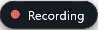
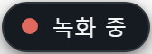
Any time during recording, tap Space and the tour stops where it is. The page stays put — and now it's your turn. Talk through what's on screen (if you turned the mic on), click around to show something interactive, or just catch your breath. Tap Space again and the tour picks up like nothing happened.
녹화 도중 언제든 Space 키를 누르면 시연이 그 자리에 그대로 멈춥니다. 화면도 그대로 멈춰 있어요. 이제 내 차례 — 마이크를 켜 뒀다면 화면을 보면서 한마디 보태고, 직접 클릭해서 뭔가 보여주거나, 잠깐 숨을 고르세요. Space 를 다시 누르면 시연이 아무 일도 없었던 것처럼 이어집니다.
Want your voice in too?
내 목소리도 같이 담고 싶다면?
Turn on Also record my microphone on the guide screen before you start (it's off by default). Your voice mixes in alongside the read-aloud narration and the page sounds — everything ends up on one neat audio track. The browser only asks for microphone permission when this is on; the normal recording never bothers you with it.
녹화를 시작하기 전, 안내 창에서 내 목소리도 함께 녹음을 켜 두세요 (기본은 꺼짐). 내가 말한 내용이 읽어주는 안내·페이지 소리와 함께 하나의 트랙으로 깔끔하게 담깁니다. 이 옵션을 켰을 때만 브라우저가 마이크 권한을 한 번 물어봐요 — 평소 녹화에서는 권한 창이 뜨지 않아요.
Limits & gotchas
제한 & 주의사항
- You'll see two share dialogs. The browser doesn't let a single recording of one tab include the page's sound, so the second dialog is unavoidable. If you don't need the voice narration captured, you can cancel it.
- WebM video file. Most modern players open it just fine — Chrome, Edge, VLC, the built-in Media Player on Windows 11. Older Windows Media Player just needs Microsoft's free Web Media Extensions + VP9 Video Extensions from the Microsoft Store (Windows Update often slips these in for you already). Need an MP4 instead? Run the file through ffmpeg to convert it.
- Tours that play through the embedded launcher on another site can't be recorded. Those are view-only on that site by design — record from your own Manuscript panel instead.
- Browser-internal pages (
chrome://,edge://) and the new-tab page can't be recorded — same browser rule that blocks the rest of Manuscript on those pages.
- 공유 다이얼로그가 두 번 나옵니다. 브라우저는 탭 하나만 녹화할 때 그 페이지의 소리를 함께 담지 못하게 막아 두기 때문에, 두 번째 다이얼로그는 피할 수 없어요. 음성 안내를 녹음할 필요가 없다면 두 번째는 취소해도 됩니다.
- WebM 동영상 파일. 요즘 플레이어는 대부분 잘 엽니다 — Chrome, Edge, VLC, Windows 11 기본 Media Player 모두 OK. 구형 Windows Media Player 는 Microsoft Store 의 무료 Web Media Extensions + VP9 Video Extensions 가 있으면 재생됩니다 (Windows Update 로 이미 깔려 있는 경우도 많아요). MP4 가 필요하면 ffmpeg 로 변환해서 쓰세요.
- 다른 사이트에 임베드된 런처에서 재생되는 시연은 녹화할 수 없습니다. 그쪽은 보기 전용으로 설계돼 있어요 — 녹화는 본인의 Manuscript 패널에서 진행하세요.
- 브라우저 자체 페이지(
chrome://,edge://) 와 새 탭은 녹화 불가 — Manuscript 의 다른 기능과 동일한 브라우저 정책 때문입니다.
9. Check that steps still match the page NEW v0.4.0
9. 스텝이 페이지와 여전히 맞는지 점검 NEW v0.4.0
Pages change over time — internal names get renamed, ids get regenerated, words get rewritten. Validation walks through every step you wrote and tells you, with one of four colors, whether Manuscript can still find the original spot. Open the modal, hit 검증 시작 (Start validation), and every step lights up green / yellow / red one by one. Tours that span multiple pages navigate themselves.
페이지는 시간이 지나면 바뀝니다 — 내부 이름이 바뀌고, 식별자가 새로 생성되고, 글자도 다듬어지죠. 검증은 작성한 모든 스텝을 하나씩 돌려보며, Manuscript 가 원래 자리를 아직 찾아낼 수 있는지 네 가지 색으로 알려줍니다. 모달을 열고 검증 시작 을 누르면 각 스텝이 녹/노/빨로 차례로 표시됩니다. 여러 페이지에 걸친 시연은 자동으로 페이지를 이동합니다.
How to run
실행 방법
- Click the ✓ icon in the panel footer.
- A modal opens with every step listed in order, waiting to be checked.
- Hit 검증 시작. Steps on the current page light up one by one as Manuscript finds each spot.
- If the scenario has steps on other pages, the modal shows a Moving to next page… banner, navigates there, and picks the modal back up automatically on the new page.
- After the last page the modal shows 검증 완료 (Validation complete) and the panel takes you back to the scenario's first page so you're back where you started.
- Esc or the × in the corner closes the modal at any time.
- 패널 하단의 ✓ 아이콘을 클릭합니다.
- 모든 스텝이 순서대로 나열된, 아직 점검 전 상태의 모달이 열립니다.
- 검증 시작 을 누르면, 현재 페이지의 스텝들이 Manuscript 가 자리를 찾는 순서대로 색이 채워집니다.
- 다른 페이지에 있는 스텝이 있으면 다음 페이지로 이동 중… 배너가 뜨고 자동으로 이동, 이동한 페이지에서 점검이 자연스럽게 이어집니다.
- 마지막 페이지가 끝나면 검증 완료 상태가 되고, 패널이 시연 1번 페이지로 자동 복귀합니다.
- Esc 또는 모서리 × 로 언제든 모달을 닫을 수 있습니다.
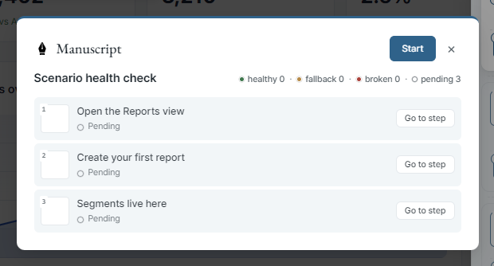
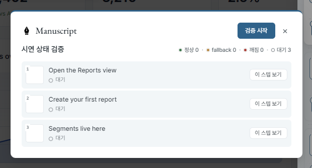
What the colors mean
색의 의미
- Green — best shape. The page's internal name tag is still in place, and Manuscript found the spot the most reliable way.
- Yellow — recovered another way. The original name tag is gone, but the visible text and what's around it still uniquely point to the spot. Re-pick the step when you have time.
- Red — couldn't find it. The element doesn't exist on this page anymore (or even the location-based guess didn't recover it within 2 seconds). Use the row's 재픽 (Re-pick) action.
- Gray — not checked yet. Either validation hasn't started, or this step is on a page that hasn't been visited in this run.
- 녹색 — 가장 안정. 페이지의 내부 이름표가 그대로 있고, 가장 튼튼한 방법으로 자리를 찾았습니다.
- 노랑 — 다른 방법으로 회복. 원래 이름표는 사라졌지만 보이는 글자와 주변 위치만으로도 그 자리를 유일하게 찾아냈습니다. 여유 있을 때 다시 픽 권장.
- 빨강 — 찾지 못함. 요소가 이 페이지에 더 이상 없거나, 위치 기반 짐작으로도 2 초 안에 회복하지 못함. 행의 재픽 버튼 사용.
- 회색 — 아직 확인 안 함. 검증이 시작되지 않았거나, 그 스텝의 페이지를 이 검증 회차에서 아직 방문하지 않은 상태.
Sub-elements get small dots too
서브 요소도 작은 dot
Each sub gets a smaller dot next to the step row, in the same color scheme. Click the row to expand the sub list and see which sub failed — fixing one sub doesn't require re-picking the whole step.
각 sub 는 스텝 행 옆에 작은 dot 으로 같은 색 체계로 표시됩니다. 행을 클릭해 sub 목록을 펴면 어느 sub 가 실패했는지 보입니다 — sub 하나 고치자고 스텝 전체를 재픽할 필요가 없어요.
Row actions
행 액션
- 이 스텝 보기 (Show this step) — closes the modal and jumps to that step in the panel, scrolling the card into view. If you're already on the right page, no reload — it just focuses.
- 재픽 (Re-pick) — closes the modal, opens that step, and arms the picker. The next click on the page replaces the original element. Sub-element re-picking is done through the sub track on the step card.
- 이 스텝 보기 — 모달을 닫고 그 스텝을 패널에서 선택, 카드를 화면 안으로 스크롤합니다. 이미 같은 페이지면 새로고침 없이 focus 만 이동.
- 재픽 — 모달을 닫고 그 스텝을 열어 picker 를 활성화합니다. 페이지에서 다음 클릭이 기존 요소를 교체합니다. 서브 요소 재픽은 카드의 서브 트랙에서 따로 처리합니다.
Colors reset when you close the panel
패널을 닫으면 색이 초기화돼요
Closing the panel clears the colored dots. The next time you open the panel everything starts blank — run validate again to see the colors. This is on purpose: dots left over from a long time ago would be misleading.
패널을 닫으면 색 표시(dot)가 모두 초기화됩니다. 다시 열면 빈 상태에서 시작하므로, 색을 보려면 검증을 다시 한 번 돌려야 합니다. 의도된 동작이에요 — 오래된 색이 그대로 남아 있으면 오히려 오해를 부를 수 있기 때문입니다.
How long Manuscript waits per element
요소 하나당 기다리는 시간
Each element gets up to 2 seconds to show up on the page. All the elements on the same page are checked at the same time, so a whole page takes at most one 2-second window — if validation is slow on a page with lots of steps, it's almost always a real problem and not the waiting time.
요소 하나당 페이지에 나타날 때까지 최대 2 초 기다립니다. 같은 페이지 안의 요소들은 동시에 함께 확인하므로, 한 페이지의 최대 대기 시간은 2 초입니다 — 스텝이 많은 페이지의 검증이 느리다면 거의 대기 시간 때문이 아니라 실제 문제일 가능성이 높습니다.
10. Export & import
10. 내보내기·불러오기
The export button in the panel footer downloads your whole manuscript as a single JSON file — every step, every annotation, every color and font the tour uses. Import does the reverse; older files are automatically upgraded to the current version. Hand the JSON to a teammate by email or chat, or keep it alongside your project files so the manual stays in sync with what it explains.
패널 하단의 내보내기 버튼으로 시연 전체를 하나의 JSON 파일로 내려받습니다 — 모든 스텝·메모·색·글꼴이 한 파일 안에 들어 있어요. 불러오기는 그 반대 동작이며, 예전 버전 파일은 현재 버전으로 자동 업그레이드됩니다. JSON 파일을 메일이나 메신저로 동료에게 보내거나, 프로젝트 파일 옆에 같이 보관해 시연이 설명 대상과 함께 관리되도록 하세요.
Import from the popup
팝업에서 바로 가져오기
Received a JSON walkthrough from a colleague? Click the Manuscript icon to open the popup, then hit ↑ Open a JSON file right below the + New Manuscript button. The picked file is added to your Previous Manuscripts list, and the panel opens on the current tab with that scenario already loaded — one click, ready to replay or edit.
동료에게 JSON 시연 파일을 받았다면? Manuscript 아이콘을 눌러 팝업을 열고 + 새 매뉴스크립트 버튼 바로 아래의 ↑ JSON 파일 가져오기 를 누르세요. 선택한 파일이 이전 매뉴스크립트 목록에 추가되고, 현재 탭에 패널이 열리면서 그 시연이 바로 로드됩니다 — 한 번 클릭으로 재생·편집 준비 완료.
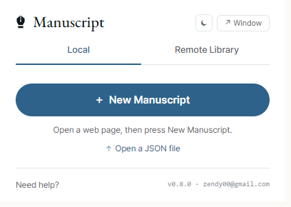

File version compatibility
파일 버전 호환표
Each manuscript file is stamped with a version number. When you open an older file, Manuscript upgrades it on the fly to match the current version — the file on disk stays untouched until you save again. The table below shows which extension versions can read which file versions.
각 매뉴스크립트 파일에는 버전 번호가 함께 적혀 있습니다. 예전 파일을 열면 Manuscript 가 현재 버전에 맞게 자동으로 변환해 주고, 다시 저장하기 전까지는 디스크의 원본은 그대로 남아 있어요. 아래 표는 어떤 확장 버전이 어떤 파일 버전을 읽을 수 있는지 정리한 것입니다.
| File version | 파일 버전 | Written by | 저장한 버전 | Readable by | 읽을 수 있는 버전 | What changed | 변환 내용 |
|---|---|---|---|---|---|---|---|
0.1.0 |
v0.1.0 – v0.1.4 | v0.1.0 – v0.1.4 | All releases (auto-migrated) | 전체 (자동 변환) | 0.1.0 → 0.1.1 adds url, name, description, thumbnailDataUrl, waitForNavigation with safe defaults. |
0.1.0 → 0.1.1 변환 시 url, name, description, thumbnailDataUrl, waitForNavigation 가 안전 기본값으로 추가됩니다. |
|
0.1.1 |
v0.1.5 – v0.3.x | v0.1.5 – v0.3.x | v0.1.5 onwards | v0.1.5 이상 | 0.1.1 → 0.1.2 is a version bump only; no field additions or removals on the migration boundary itself. | 0.1.1 → 0.1.2 는 버전 번호만 올라가는 마이그레이션 — 필드 추가/삭제 없음. | |
0.1.2 (current)(현재) |
v0.4.0 onwards | v0.4.0 이상 | v0.4.0 onwards | v0.4.0 이상 | None — this is the current version. Older files automatically get a "no sub-elements" default. v0.4's validation colors are kept in memory only and are not saved into the file. | 없음 — 현재 버전입니다. 이전 파일은 자동으로 "서브 요소 없음" 기본값을 받습니다. v0.4 의 검증 색 정보는 메모리에만 보관되고 파일에는 저장되지 않습니다. |
Going forward: a future file version (like
0.2.0) won't open in older releases —
if Manuscript meets a version it doesn't recognize, it
refuses the import rather than quietly throwing away parts
of the file. If you receive manuscripts from someone on a
newer Manuscript, make sure your own extension is up to date.
앞으로의 호환성: 미래에 나올 파일 버전(예
0.2.0)은 그보다 옛 릴리스에서 열리지
않습니다 — 모르는 버전을 만나면, 파일의 일부 정보가 조용히
사라지는 대신 가져오기 자체를 거부합니다. 더 최신 Manuscript 로
만든 매뉴스크립트를 받는다면, 본인 확장도 함께 업데이트해 주세요.
11. Previous Manuscripts
11. 이전 매뉴스크립트
Clicking the extension icon a second time shows the Previous Manuscripts list — every manuscript you've authored. The most recent work is highlighted as Resume — one click puts you back where you left off, on the same page.
확장 아이콘을 다시 클릭하면 이전 매뉴스크립트 목록이 표시됩니다. 가장 최근 작업은 이어하기로 강조되며, 클릭 한 번으로 그 매뉴스크립트로 복귀합니다 (같은 페이지로 자동 이동).
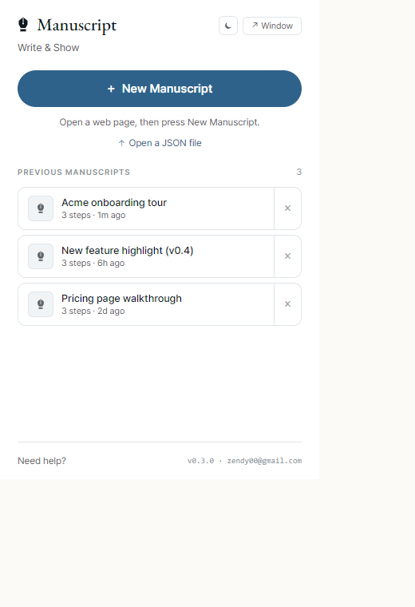
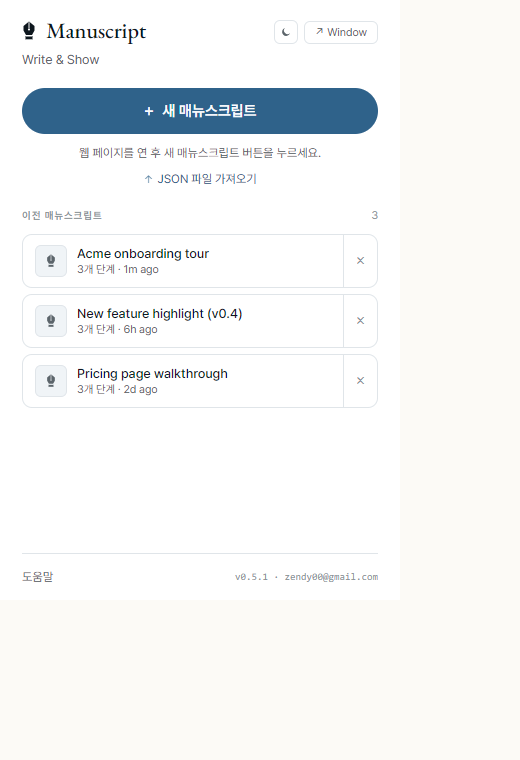
Embed it on your own site
내 사이트에 끼워 넣기
Put a "Take the tour" button on your own page.
내 사이트에 '둘러보기' 버튼 달기.
manuscript.openStore() /
manuscript.openHomepage(). Both behaviors are
opt-in — the bridge never injects UI you didn't ask for.
manuscript.openStore() /
manuscript.openHomepage() 로 그 순간을 직접 다룰 수
있어요. 두 방식 모두 옵션 — 호출하지 않은 UI 는 브리지가 알아서
띄우지 않습니다.
manuscript-bridge.0.1.3.js is a small, dependency-free file (about 14 KB) you drop onto your page. From there, your "Take the tour" button can load a saved tour and ask Manuscript to play it — the spotlights, notes, and narration take care of themselves. By default playback is read-only and cleans up after itself once the tour ends.
manuscript-bridge.0.1.3.js 는 의존성 없는 약 14 KB 짜리 작은 파일입니다. 내 페이지에 넣어두기만 하면, "둘러보기" 같은 버튼으로 저장해 둔 시연을 불러와 Manuscript 에 재생을 부탁할 수 있어요. 강조 표시·메모·음성 안내는 알아서 처리됩니다. 기본 재생은 보기 전용이며 시연이 끝나면 흔적 없이 깔끔하게 정리됩니다.
Option A — your own button
방법 A — 내 버튼 직접 만들기
Most common pattern. You author the button (any styling you
want) and wire it to the bridge. When the extension is
missing, send the visitor to the Web Store with
openStore(); optionally to your own product page
with openHomepage().
가장 자주 쓰는 패턴. 버튼은 직접 만들고(원하는 디자인 그대로)
브리지에 연결만 합니다. 확장이 없으면
openStore() 로 웹 스토어로 보내고, 옵션으로
openHomepage() 로 본인 제품 페이지로도 안내할 수 있어요.
<!-- in your page --> <script src="/manuscript-bridge.0.1.3.js"></script> <button id="start">Take the tour</button> <script> // Opt in to the homepage fallback — without this, openHomepage() warns and no-ops. manuscript.configure({ homepageUrl: 'https://zendy00.github.io/manuscript-pages/', banner: false, // suppress the bridge's built-in install prompt — we handle it below }); const btn = document.getElementById('start'); btn.addEventListener('click', async () => { if (!(await manuscript.isInstalled())) { manuscript.openStore(); // or: manuscript.openHomepage() return; } btn.hidden = true; const scenario = await fetch('/tours/tour-en.json').then(r => r.json()); await manuscript.load(scenario); await manuscript.play({ standalone: true }); }); manuscript.onExit(() => { btn.hidden = false; }); </script>
<!-- 호스트 페이지 안에 둡니다 --> <script src="/manuscript-bridge.0.1.3.js"></script> <button id="start">투어 시작</button> <script> // 홈페이지 fallback 은 opt-in — 호출하지 않으면 openHomepage() 는 경고만 출력하고 no-op. manuscript.configure({ homepageUrl: 'https://zendy00.github.io/manuscript-pages/', banner: false, // 기본 설치 안내 끄기 — 아래에서 직접 처리 }); const btn = document.getElementById('start'); btn.addEventListener('click', async () => { if (!(await manuscript.isInstalled())) { manuscript.openStore(); // 또는: manuscript.openHomepage() return; } btn.hidden = true; const scenario = await fetch('/tours/tour-ko.json').then(r => r.json()); await manuscript.load(scenario); await manuscript.play({ standalone: true }); }); manuscript.onExit(() => { btn.hidden = false; }); </script>
Option B — let the bridge mount the launcher
방법 B — 브리지가 런처를 직접 띄우기
Zero-DOM-touch path. mountLauncher() attaches a
Shadow-DOM-isolated pill to the bottom-right of your page.
When the extension is installed it reads "Take the tour" and
runs the configured scenario on click; when it's missing the
same pill morphs into "Install Manuscript" (plus an optional
"Learn more" link if you set homepageUrl). A
small ✕ on the install prompt persists dismissal to
localStorage.
DOM 안 건드리는 경로. mountLauncher() 가
Shadow DOM 격리된 pill 을 페이지 우하단에 띄웁니다. 확장이 설치돼
있으면 "투어 시작" 으로, 미설치면 같은 자리에 "Manuscript 설치" 가
뜨고 homepageUrl 을 지정해 두면 "자세히 보기" 링크도
함께 나옵니다. 안내의 ✕ 닫기 버튼은 localStorage 에
기억되어 같은 사이트에서 다시 뜨지 않아요.
<!-- in your page --> <script src="/manuscript-bridge.0.1.3.js"></script> <script> manuscript.configure({ homepageUrl: 'https://zendy00.github.io/manuscript-pages/', // optional "Learn more" lang: 'auto', // 'auto' (default) / 'en' / 'ko' }); manuscript.mountLauncher({ scenarioUrl: '/tours/tour-en.json', // or scenario: {...} label: 'Take the tour', // optional override }); </script>
<!-- 호스트 페이지 안에 둡니다 --> <script src="/manuscript-bridge.0.1.3.js"></script> <script> manuscript.configure({ homepageUrl: 'https://zendy00.github.io/manuscript-pages/', // 옵션: "자세히 보기" lang: 'auto', // 'auto'(기본) / 'en' / 'ko' }); manuscript.mountLauncher({ scenarioUrl: '/tours/tour-ko.json', // 또는 scenario: {...} label: '투어 시작', // 옵션: 라벨 직접 지정 }); </script>
Public API (manuscript.*)
공개 API (manuscript.*)
// ── Discovery manuscript.isInstalled() // → Promise<boolean> (cached per page) manuscript.refreshInstalled() // re-ping, bust the cache // ── Lifecycle manuscript.load(scenario) // object or JSON string manuscript.play({ startIndex, paused, standalone }) manuscript.pause() / manuscript.next() / manuscript.prev() manuscript.jump(index) manuscript.exit() // ── Navigation (new in 0.1.3) — works with or without a launcher manuscript.openStore() // opens the extension store in a new tab manuscript.openHomepage() // opens configured homepageUrl, or warns + no-ops // ── Auto-mounted launcher (new in 0.1.3) manuscript.mountLauncher({ scenarioUrl, scenario, label, standalone }) manuscript.unmountLauncher() // ── Configure manuscript.configure({ banner: true, // show install prompt on missing extension timeoutMs: 1500, lang: 'auto', // 'auto' | 'en' | 'ko' storeUrl: 'https://chromewebstore.google.com/...', homepageUrl: 'https://example.com', // opt-in extra link onInstallClick: () => analytics.track('mn:install'), onHomeClick: () => analytics.track('mn:learn-more'), }) // ── Replay-end — fires on ✕ or natural end of tour const off = manuscript.onExit(() => { /* restore your UI */ }); // off() ← call to unregister // or: window.addEventListener('manuscript:exited', handler)
// ── 발견 manuscript.isInstalled() // → Promise<boolean> (페이지 내 캐시) manuscript.refreshInstalled() // 캐시 초기화 후 재핑 // ── 라이프사이클 manuscript.load(scenario) // 객체 또는 JSON 문자열 manuscript.play({ startIndex, paused, standalone }) manuscript.pause() / manuscript.next() / manuscript.prev() manuscript.jump(index) manuscript.exit() // ── 이동 API (0.1.3 신규) — 런처 유무와 무관하게 호출 가능 manuscript.openStore() // 새 탭에서 확장 스토어 열기 manuscript.openHomepage() // homepageUrl 열기 (미설정 시 경고 + no-op) // ── 자동 마운트 런처 (0.1.3 신규) manuscript.mountLauncher({ scenarioUrl, scenario, label, standalone }) manuscript.unmountLauncher() // ── 설정 manuscript.configure({ banner: true, // 확장 미설치 시 설치 안내 자동 표시 timeoutMs: 1500, lang: 'auto', // 'auto' | 'en' | 'ko' storeUrl: 'https://chromewebstore.google.com/...', homepageUrl: 'https://example.com', // opt-in 추가 링크 onInstallClick: () => analytics.track('mn:install'), onHomeClick: () => analytics.track('mn:learn-more'), }) // ── 재생 종료 — ✕ 클릭 또는 마지막 step 완료 시 const off = manuscript.onExit(() => { /* 사용자 UI 복원 */ }); // off() ← 호출해서 등록 해제 // 또는: window.addEventListener('manuscript:exited', handler)
Downloads
다운로드
manuscript-bridge.0.1.3.js (current)
The bridge library. openStore(), openHomepage(), mountLauncher(), and a Shadow-DOM-isolated install prompt. Drop it into your page and the manuscript.* global appears. The legacy manuscript-bridge.0.1.2.js URL stays live as an alias of this same file, so hosts pinned to it keep working unchanged.
브리지 라이브러리. openStore(), openHomepage(), mountLauncher() 와 Shadow DOM 격리된 설치 안내가 포함됩니다. 페이지에 추가하면 manuscript.* 전역이 노출됩니다. 구버전 manuscript-bridge.0.1.2.js URL 도 이 파일의 alias 로 그대로 살아 있어, 이 URL 에 고정해 둔 호스트는 무수정으로 계속 동작합니다.
SKILL.md
Hand this file to an AI agent (Claude, Cursor, …) along with a URL — the agent emits a ready-to-play tour JSON. No DOM picking, no manual JSON editing.
이 파일을 AI agent(Claude, Cursor 등)에 URL과 함께 전달하면 agent가 그대로 재생 가능한 투어 JSON을 출력합니다. DOM 직접 선택·JSON 수동 편집 불필요.
↓ DownloadTour JSON (example)
Example only — not a template for your site. The 8-step tour of this landing page. Selectors target elements that exist here (#features, #bridge, …) and will not match your own page. Use it as a reference shape, then have your AI agent author a fresh JSON for your URL via SKILL.md. English and Korean versions share the same selectors — only narration and step names differ.
예제일 뿐 — 본인 사이트 템플릿이 아닙니다. 이 랜딩 페이지를 8 스텝으로 안내하는 투어입니다. 셀렉터가 이 페이지의 요소(#features, #bridge 등)를 가리키므로 본인 페이지에서는 매칭되지 않습니다. 구조만 참고하고 본인 URL용 JSON은 SKILL.md로 AI agent에 새로 생성시키세요. 영어·한국어 버전은 셀렉터가 동일하며 narration과 step 이름만 다릅니다.
Good to know
알아두면 좋은 점
A couple of limitations to keep in mind.
알아두실 제한사항.
| Capability | 항목 | Status | 상태 | Note | 비고 |
|---|---|---|---|---|---|
chrome:// / edge:// pages | chrome:// · edge:// 페이지 |
Blocked | 불가 | The browser's own settings pages don't allow any extension to run there. | 브라우저 자체 설정 페이지에는 어떤 확장 프로그램도 작동할 수 없어요. |
| Pages from other sites embedded inside the page | 다른 사이트가 들어 있는 프레임 | Limited | 제한적 | You can still pick something inside one — the click goes through. But during playback Manuscript can't reach back in to find that spot again, because the browser blocks one site from looking inside another site's frame. Embedded pages from the same site work fully. | 안에 있는 요소를 선택하는 것까지는 됩니다 — 클릭은 통과해요. 다만 재생 시점에는 Manuscript 가 그 자리를 다시 찾을 수 없습니다. 브라우저가 한 사이트에서 다른 사이트의 프레임 안을 들여다보지 못하도록 막기 때문이에요. 같은 사이트에서 들어온 프레임은 문제 없이 작동합니다. |